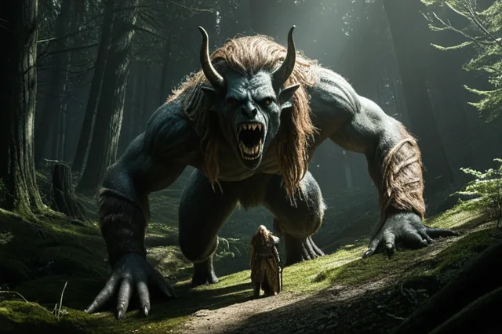

Хель
Хель (Hel) — владычица Хельхейма, полумёртвая полуживая
Hel
Хель ("Скрытая") — владычица Хельхейма, царства мёртвых. Дочь Локи и Анграбоды. Описывается как наполовину живая (красивая женщина), наполовину мёртвая (разлагающийся труп). Принимает души тех, кто умер от старости или болезни.
Происхождение: Род Локи и Анграбоды
Германическое имя: Hailaz
Роль: владычица Хельхейма
Семья
Легенды
- Один изгнал Хель в Нифльхейм и назначил правительницей мёртвых
- Её тело наполовину красиво, наполовину гниёт
- Отказала вернуть Бальдра из мёртвых
- В Рагнарёке возглавит армию мёртвых
Источники
Прозаическая Эдда, Поэтическая Эдда
Связанные
ᚱ